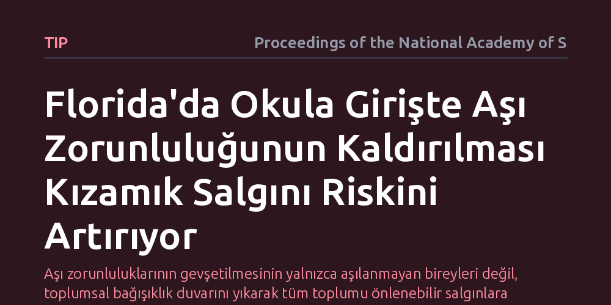

TIP · Proceedings of the National Academy of Sciences · 2026-10-09
Araştırmacılar, Florida'da okula girişteki aşı zorunluluğunun kaldırılmasının kızamık salgınları üzerindeki olası etkilerini matematiksel modelleme kullanarak inceledi. Aşılama oranlarının zaten kritik eşiğin altına indiği eyalette, yasal zorunluluğun kalkmasının bulaşmayı ve sürekli salgın riskini belirgin şekilde artıracağı saptandı.
Aşı zorunluluklarının gevşetilmesinin yalnızca aşılanmayan bireyleri değil, toplumsal bağışıklık duvarını yıkarak tüm toplumu önlenebilir salgınlara açık hale getirdiğini gösterir.

Kızamık, bilinen en bulaşıcı virüslerden biridir ve bir toplumda salgınların kalıcı olarak önüne geçebilmek için nüfusun yaklaşık yüzde 95'inin bağışık olması gerekir. Amerika Birleşik Devletleri'nin Florida eyaletinde son yıllarda aşılanma oranlarının bu kritik eşiğin altına gerilemesi, toplum sağlığını koruyan görünmez kalkanı zayıflatmıştı. Eyalet yönetiminin okula başlarken aranan aşı zorunluluğunu kaldırma önerisi ise kamuoyunda büyük bir tartışma başlattı.
Ortada duran temel soru şuydu: Yasal zorunluluğun kaldırılması ve aşı kararının tamamen bireysel tercihlere bırakılması, zaten hassas dengede duran salgın riskini nasıl etkiler? Bir çocuğun aşılanmaması yalnızca kendi sağlığını ilgilendirmez; henüz aşı yaşı gelmemiş bebekler, kanser tedavisi görenler ve aşıya tıbbi engeli olan bireyler için de doğrudan hayati tehdit oluşturur. Bu nedenle yasal koruyuculuğun geri çekilmesinin yaratacağı sonuçları bilimsel olarak öngörmek büyük önem taşır.
Halk sağlığı politikalarının etkisini gerçek insanlar üzerinde deney yaparak ölçmek etik ve pratik olarak mümkün değildir. Bu sebeple araştırmacılar, bulaşıcı hastalıkların yayılımını incelemek için yaygın olarak kullanılan matematiksel epidemiyoloji modellerinden yararlandılar. Çalışmada, Florida'nın mevcut aşılama verileri, yaş grupları arasındaki temas örüntüleri ve kızamık virüsünün bulaşma dinamikleri simülasyonun ana girdileri olarak belirlendi.
Model; duyarlı, enfekte ve bağışık bireyler arasındaki geçişleri hesaplayan diferansiyel denklemler üzerine kuruldu. Okullardaki aşı zorunluluğu kalktığında velilerin aşı muafiyeti taleplerinin artacağı senaryolar tanımlandı ve bu düşüşün sınıflardan başlayarak tüm eyalet geneline nasıl yayılacağı bilgisayar simülasyonlarıyla adım adım incelendi.
Araştırmanın sonuçları, okul aşı zorunluluğunun kaldırılmasının Florida'da kızamık bulaşmasını ve salgınların büyüklüğünü belirgin biçimde tırmandıracağını ortaya koydu. Eyaletteki mevcut aşılanma oranları zaten sürekli salgınları önlemeye yetmeyen bir seviyede bulunduğundan, yasal kuralın sağladığı korumanın kalkması mevcut yangına körükle gitmek anlamına geliyor.
Simülasyonlar, aşılanmamış çocukların belirli okullarda kümelenmesiyle birlikte yerel bulaşların hızla kontrol edilemez zincirleme salgınlara dönüşeceğini gösterdi. Zorunluluk kalktığında düşen her birkaç puanlık aşılanma oranı dahi virüsün toplum içinde tutunmasını kolaylaştırıyor ve vaka sayılarında katlanarak artan sıçramalara yol açıyor.
Bu bulgular, okula girişte aşı şartı aramanın sıradan bir bürokratik zorunluluk değil, toplumsal bağışıklığın omurgası olduğunu gösteriyor. Zorunlulukların esnetilmesi aşı kararsızlığını meşrulaştırarak koruyuculuk oranlarını hızla aşağı çekebilir. Böyle bir düşüşün bedelini ise yalnızca aşıyı reddeden aileler değil, bağışıklık duvarının yıkılmasıyla enfeksiyona açık hale gelen tüm toplum öder.
Çalışma, halk sağlığı kararlarının politik eğilimler veya soyut özgürlük tartışmaları yerine somut epidemiyolojik gerçekler ışığında alınması gerektiğini açıkça ortaya koyuyor. Aşı zorunluluğunun kaldırılması yönündeki adımlar, önlenebilir bir çocukluk çağı hastalığının yeniden kronik bir halk sağlığı krizine dönüşmesine zemin hazırlayabilir.